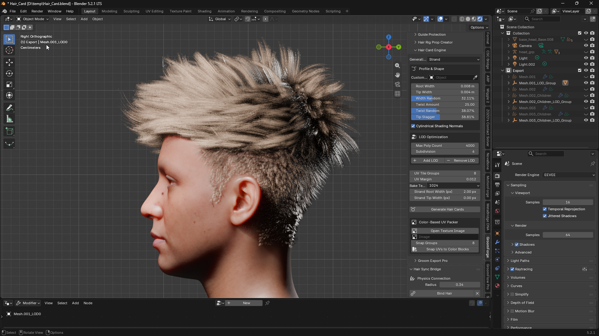

🛠️ GroomForge v1.6.0 공식 위키: Blender to Unreal Engine 5.7 / 5.8¶
🔔 v1.6.0 릴리즈 노트¶

- Cycles 렌더가 정상으로 나옵니다. 예전에는 Cycles에서 머리가 새까만 덩어리로 나왔습니다.
- 헤어 끝이 가늘어집니다. 카드 끝이 뭉툭하게 잘린 단면으로 끝나지 않고 서서히 얇아져 사라집니다. Strand Root Width / Strand Tip Width 로 뿌리와 끝의 굵기를 픽셀 단위로 각각 정합니다.
- 카드가 두피에 붙어서 생성됩니다. 일부 카드가 머리에서 떠 있거나 파묻히던 문제가 사라졌습니다.
- 루트와 팁이 뒤바뀌지 않습니다. 일부 카드가 거꾸로 생성되던 문제가 사라졌습니다.
- 헤어커브 이름으로 카드가 만들어집니다. 헤어커브가 여러 개여도 각각의 카드가 따로 남습니다. 예전에는 새로 생성할 때 앞서 만든 카드가 지워졌습니다.
- Max Poly Count 가 실제로 반영됩니다. 지정한 만큼 카드가 만들어집니다. 예전에는 그루밍의 Clump 개수만큼만 나왔습니다.
- 베이크 해상도에 4096 이 추가되었습니다.
- Tip Stagger 슬라이더 로 카드 끝이 흩어지는 정도를 조절합니다.
- 원통형 셰이딩 노멀 로 납작한 카드가 둥근 다발처럼 음영이 집니다.
- 깊이 음영 으로 다발 안쪽 가닥이 더 어둡게 구워져 머리에 두께감이 생깁니다.
- macOS 에서 Blender 5.2 이상을 지원합니다. 이전에는 해당 버전에서 Alembic 내보내기가 동작하지 않았습니다.
🇺🇸 English | 🇰🇷 한국어
전략 및 파이프라인 개요¶
🎯 전문 그루밍을 위한 고급 파이프라인 솔루션
GroomForge v1.6.0은 Blender Hair Curves를 Unreal Engine 5.7 / 5.8 Groom 시스템 및 5.7 Hair Dataflow에 최적화된 에셋으로 변환하고 내보내기 위해 설계된 전문 파이프라인 애드온입니다. Maya XGen이나 Houdini 같은 도구에서만 가능했던 고급 기능을 Blender 환경에서 직접 구현하여 정밀한 가이드 컨트롤과 속성 주입을 제공합니다.

고급 렌더링 속성 잠금 해제 (v1.1.0 업데이트)

Unreal Engine MetaHuman 베이스 템플릿 Groom 에셋

GroomForge v1.4.0으로 생성 및 가져온 Groom 에셋
1. 주요 개요¶
- 정밀한 데이터 변환: Unreal Engine이 인식하는 Guide (값: 1) 및 Strand (값: 0) 속성을 완벽하게 구분하고 제어합니다.
- 루트 정렬: 수천 개의 헤어 커브 루트를 타겟 메시(두피) 노멀에 자동으로 정렬하여 시뮬레이션 안정성을 보장합니다.
- 자동화된 리깅 파이프라인: 헤어 액세서리 생성부터 가이드 커브 기반 본 리깅까지 모든 것을 자동화합니다.
- MetaHuman 호환 헤어 카드 엔진: 엔진 내 생성기보다 빠른 카드 생성, 길이 기반 패킹 및 컬러 가이드 UV 배치를 지원합니다.
- UE 최적화 내보내기: Root UV, ClumpID, Occlusion 등 엔진 렌더링에 필수적인 전문 속성을 자동으로 주입합니다.
- Send to Unreal Engine: 한 번의 클릭으로 헤어를 실행 중인 Unreal Engine 에디터에 완성된 Groom 에셋으로 직접 전송합니다 — 수동 파일 내보내기/가져오기 불필요.
- 자연스러운 위치 기반 클럼핑: Clump ID가 각 스트랜드의 실제 3D 위치에서 생성되므로, 물리적으로 가까운 스트랜드가 함께 그룹화되어 더 자연스럽고 뭉친 느낌을 제공합니다.
- 🆕 실제 헤어 카드 클러스터링: 카드가 무작위 스트랜드 하나씩이 아니라, 실제로 가까이 뭉친 스트랜드 덩어리를 기반으로 생성되어 더 풍성하고 자연스러운 카드가 됩니다.
- 🆕 카드 텍스처·머티리얼 자동 생성: 카드를 생성하면 바로 사용 가능한 텍스처와 EEVEE·Cycles 머티리얼이 자동으로 함께 만들어집니다 — 텍스처나 셰이더를 따로 만들 필요가 없습니다.
2. 사전 요구 사항 및 요구 조건¶
- 설치:
Edit > Preferences > Get Extensions > Install from Disk→groomforge_pro-1.6.0.zip선택 후 활성화. GroomForge는 Blender Extension이므로 Add-ons 탭이 아니라 Extensions 탭에 표시됩니다. - 지원 환경: Blender 4.5 – 5.2, Unreal Engine 5.7 – 5.8. Windows (x64) 및 macOS (Apple Silicon).
- 필요 데이터: Blender Hair Curves (네이티브 또는 타사 애드온), 타겟 메시 (캐릭터 헤드 메시).
Warning
⚠️ 중요: GroomForge는 헤어 생성 도구가 아닙니다.
기존 헤어 커브를 Unreal Engine 5.7 / 5.8용으로 정리, 가이드화, 리깅, 속성 설정, 내보내기하는 파이프라인 애드온입니다.
🚀 크로스 플랫폼 성능 혁신¶
GroomForge는 플랫폼의 경계를 허물며 Windows와 Mac(M1/M2/M3) 환경 모두에서 최고의 성능을 제공하도록 설계되었습니다. 대규모 그루밍 데이터셋을 처리할 때도 엔진 수준의 안정성을 보장합니다.
- 비교할 수 없는 속도: Mac에서 Blender 네이티브 기능 대비 1.4배 빠른 처리 속도를 달성했습니다. (100만 스트랜드 기준)
- 대규모 데이터 확장성: 최대 1000만 스트랜드(10M Strands) 처리의 검증된 안정성.
- 완벽한 정밀도: 모든 플랫폼에서 정밀도 차이 0.0000000000을 기록하여 절대적인 데이터 무결성을 보장합니다.

AMD64 / arm64 아키텍처에서 Blender 4.5.8 LTS로 수행한 벤치마크
작업 흐름¶
- 헤어 커브 준비 — 스타일링 완료 및 스케일 적용 (
Ctrl+A). - 타겟 메시 지정 — 헤어가 부착될 헤드 메시를 준비합니다.
- Root Align 실행 — 타겟 메시를 기준으로 커브 루트를 정밀하게 정렬합니다.
- 가이드 설정 도구 사용 — Fix & Output Connect로 가이드 지정 및 노드 설정 자동화.
- 가이드 컬러 뷰 확인 — 가이드와 스트랜드 구성을 시각적으로 검사합니다.
- (선택) 헤어 리그 프롭 생성 — 가이드 기반 액세서리 및 자동 리깅 생성.
- (선택) 헤어 카드 엔진 활용 — UE 호환 고속 헤어 카드 및 UV 레이아웃 생성.
- 고급 Groom 내보내기 실행 — Add Missing Attributes로 최종 렌더링 속성을 주입하고 Alembic 내보내기.
- Unreal Engine 5.7 / 5.8에서 적용 — Groom 에셋 가져오기 및 검증 (필요시 5.7 Dataflow와 통합).
기술 매뉴얼 및 기능¶
1. GroomForge 설치 방법¶
상단 메뉴에서 Edit > Preferences로 이동합니다.
Add-ons 탭 선택 → Install... 클릭 → GroomForge.zip 선택 → Install Add-on 클릭.
"GroomForge"를 검색하고 체크박스를 선택하여 활성화합니다.
2. Root Align: 원클릭 루트 정렬¶
수천 개의 커브 방향을 수동으로 수정하는 지루한 작업을 제거하고 Unreal에서의 부착 정밀도를 보장합니다.
- 사용 방법: Hair Curves 선택 → 타겟 메시 선택 → Root Align 클릭.
- 정밀도: 메시에 가장 가까운 점을 자동으로 식별하여 Root로 설정, 헤어가 떠 있거나 루트와 팁이 뒤바뀌는 시뮬레이션 오류를 방지합니다.
커브의 시작점과 끝점이 뒤바뀌어 있어도 타겟 메시(머리)에 가장 가까운 점을 자동으로 식별하여 Root를 재설정하고 방향을 올바르게 재정렬합니다.
3. 가이드 설정 도구 & 픽스 도구 (속성 보호)¶
Unreal Groom 시스템에 필요한 Guide 속성을 정밀하게 정의하고 보호합니다.
- Guide 1 / 0: 선택한 커브를 가이드로 수동 지정/해제.
- Select 1 / 0: 현재 가이드를 빠르게 선택하거나 선택을 반전.
- Random Guide: 헤어의 특정 비율을 무작위로 가이드로 변환.
Fix & Output Connect: Geometry Nodes 내에서 Guide 속성이 스트랜드로 "번지는" 것을 방지하는 데 필요한 노드 구조를 자동으로 구축합니다.
Blender 헤어 애드온 사용 시 (예: HairBRIC, Hair Tool)
네이티브 Blender 헤어 노드(Geometry Nodes) 사용 시
💡 프로 팁: 이 기능은 HairBRIC 애드온과 함께 사용할 때 가장 직관적으로 작동합니다.
Clump Scale: Fix & Output Connect 버튼 바로 옆에 Clump Scale 슬라이더가 있습니다. 자동으로 생성되는 헤어 클럼프의 크기를 제어합니다 — 값이 낮을수록 더 크고 굵은 클럼프가 생성되고, 값이 높을수록 더 작고 미세한 클럼프가 생성됩니다. 조정한 후 Fix & Output Connect를 다시 실행하여 차이를 확인하세요. 클럼프는 각 스트랜드의 실제 3D 공간 위치를 기반으로 하므로, 가까운 스트랜드가 무작위로 그룹화되는 대신 자연스럽게 함께 그룹화됩니다. 🆕 클럼프 모양이 더 유기적으로 바뀌었고, 재생성할 때마다 조금씩 달라져서 예전처럼 격자 무늬로 반복되지 않습니다.
4. 가이드 컬러 뷰 (시각적 검사)¶
내보내기 전 데이터 구성의 최종 시각적 검증. (가이드: 빨간색, 스트랜드: 파란색)
Blender 헤어 애드온 사용 시 (예: HairBRIC, Hair Tool)
네이티브 Blender 헤어 노드(Geometry Nodes) 사용 시
Warning
⚠️ 경고: 뷰포트 vs 실제 데이터
Blender Geometry Nodes의 특성상 실시간 뷰포트 표시가 실제 내보내기 데이터와 다를 수 있습니다. 컬러 뷰는 전반적인 분포와 흐름 확인용으로 사용하고, 최종 데이터는 항상 Unreal Engine 내에서 검증하세요.
5. 가이드 보호¶
이 패널은 가이드 데이터의 의도하지 않은 변경을 방지하고 전체 데이터 무결성을 검사하는 도구를 제공합니다.

- Fix Guide Count: 현재 설정된 가이드 수를 잠급니다.
- Hair Debug Info: 헤어 커브의 현재 데이터 상태를 표시합니다.
💡 프로 팁: 모든 가이드 설정을 완료하고 Fix & Output Connect를 실행한 후 Fix Guide Count를 클릭하는 것이 좋습니다.
6. 헤어 리그 프롭 생성기 (자동화된 리깅 파이프라인)¶
가이드 커브를 물리적 골격으로 사용하여 액세서리 생성과 리깅을 자동화합니다.
- 타겟 본 선택: 아마추어 내 특정 본을 직접 선택할 수 있습니다.
- 랜덤 스케일: 자연스러운 시각적 변화를 위해 인스턴스 크기를 무작위화합니다.
- 강제 UE 스케일 (100x): GroomForge는 타겟 아마추어가 Unreal 스타일 센티미터 스케일을 사용하는지 자동으로 감지하고 이를 보정합니다. 어떤 이유로 올바르게 감지되지 않으면 이 상자를 체크하여 수동으로 올바른 스케일을 강제합니다.
사용자가 선택한 단일 메시를 가이드 커브를 따라 정밀하게 배치합니다.
컬렉션의 여러 메시를 무작위 간격과 스케일로 자동 산포합니다.
가이드 커브 기반 자동 리깅 및 본 시스템의 시각적 결과.
*엣지 기반 리깅: 커스텀 골격 레이아웃을 위해 Edit Mode에서 선택한 엣지를 기반으로 리그 구조를 자동 생성합니다.
7. 헤어 카드 엔진 (고속 카드 생성)¶
Unreal MetaHuman 헤어 카드 생성기의 느린 생성 속도를 보완하는 기술적 솔루션입니다.
- LOD 호환성: MetaHuman의 LOD 시스템과 완벽하게 동기화되도록 특별히 설계되었습니다.
- UV 컬러 프로젝션: UE 생성 맵의 컬러 분리 데이터를 사용하여 카드 UV를 자동으로 매핑합니다.
- 🆕 헤어 끝이 가늘어집니다: 카드 끝이 뭉툭하게 잘린 단면으로 끝나지 않고 서서히 얇아져 사라집니다. Strand Root Width / Strand Tip Width 로 뿌리와 끝의 굵기를 픽셀 단위로 각각 정합니다.
- 🆕 베이크 해상도 선택: 512 / 1024 / 2048 / 4096 중에서 고릅니다. 값을 올리면 가닥이 더 가늘고 선명해집니다.
- 🆕 Cycles 렌더가 정상으로 나옵니다: 예전에는 Cycles에서 머리가 새까만 덩어리로 나왔습니다.
- 🆕 카드가 두피에 붙어서 생성됩니다: 일부 카드가 머리에서 떠 있거나 파묻히던 문제가 사라졌습니다.
- 🆕 루트와 팁이 뒤바뀌지 않습니다: 일부 카드가 거꾸로 생성되던 문제가 사라졌습니다.
- 🆕 헤어커브 이름으로 카드가 만들어집니다: 헤어커브가 여러 개여도 각각의 카드가 따로 남습니다. 예전에는 새로 생성할 때 앞서 만든 카드가 지워졌습니다.
- 🆕 Max Poly Count 가 실제로 반영됩니다: 지정한 만큼 카드가 만들어집니다. 예전에는 그루밍의 Clump 개수만큼만 나왔습니다.
- 🆕 Tip Stagger 슬라이더: 카드 끝이 흩어지는 정도를 직접 조절합니다.
- 🆕 원통형 셰이딩 노멀: 납작한 카드가 둥근 다발처럼 부드럽게 음영이 집니다.
- 🆕 깊이 음영: 다발 안쪽에 있는 가닥이 더 어둡게 구워져 머리에 두께감이 생깁니다.
프로필 커브 또는 베이스 커브를 기반으로 즉시 헤어 카드를 생성합니다.
Unreal Engine의 LOD 시스템과 완벽하게 호환되는 단계별 헤어 카드를 생성합니다.
 헤어 카드 생성 중 UE 호환 속성(UV 맵, 컬러 속성, 버텍스 데이터)을 자동으로 생성합니다.
Flow 맵, 그래디언트 그룹, Occlusion 변형과 같은 사전 구성된 데이터로 Unreal의 헤어 셰이더로 원활하게 전환됩니다.
헤어 카드 생성 중 UE 호환 속성(UV 맵, 컬러 속성, 버텍스 데이터)을 자동으로 생성합니다.
Flow 맵, 그래디언트 그룹, Occlusion 변형과 같은 사전 구성된 데이터로 Unreal의 헤어 셰이더로 원활하게 전환됩니다.
컬러 가이드 이미지를 사용하여 수천 개의 헤어 카드 UV를 자동으로 배치하고 정렬합니다.
💡 전문 최적화 팁: 가볍게 유지하세요!
특히 대규모 데이터셋(예: 1,000,000+ 스트랜드)을 다룰 때 최상의 성능을 보장하려면 다음 지침을 따르세요: 권장 해상도: 256px ~ 512px. 왜 저해상도를 사용하나요? 이 도구는 텍스처 디테일이 아닌 공간 영역을 분석합니다. 더 큰 이미지(예: 4K)는 정렬 정밀도를 높이지 않고 중복 픽셀 계산만 증가시킵니다.
256px 가이드 이미지를 사용하면 메모리 오버헤드가 크게 줄어들고 처리 시간이 빨라져 극한의 스트랜드 수에서도 거의 즉각적인 UV 스냅이 가능합니다.
Note
모범 사례: 컬러 가이드를 저해상도 PNG로 저장하여 작업 흐름 효율성을 극대화하세요. "픽셀을 계산에 낭비하지 마세요. 낮은 해상도는 데이터 손실 없이 더 빠른 결과를 의미합니다."
8. 고급 Groom 내보내기 (속성 주입의 핵심)¶
Blender 커브를 Unreal Engine이 즉시 이해하는 "진짜 Groom" 데이터로 변환합니다.
- Add Missing Attributes: 한 번의 클릭으로 모든 필수 렌더링 속성 노드를 생성하고 주입합니다: ClumpID, Occlusion, Roughness, Root UV.
하나 또는 여러 개의 헤어 커브를 선택하여 단일 Alembic 파일로 내보냅니다.

더 많은 속성, 더 나은 비주얼
💎 시각적 검증: MetaHuman 셰이딩 호환성
GroomForge의 Root UV 주입은 100% 정확하여 MetaHuman Creator에서 직접 실시간 Ombre 및 Highlight 조정이 가능합니다.
8.1 사전 계산된 가이드 가중치 (실험적)¶
기본적으로 꺼져 있는 독립적인 내보내기 옵션으로, Unreal Engine이 자체적으로 처음부터 다시 계산하는 대신 Blender의 자체 가이드-투-스트랜드 보간을 재현할 수 있게 합니다.
- Groom 내보내기 패널의 자체 "Advanced (Experimental)" 박스에 있습니다 — 위의 일반 Guide 체크박스와는 별개입니다. 이 기능을 원하지 않으면 체크하지 않은 채로 두고(또는 내보내기 시 Guide 체크 해제) 정상적으로 내보내면 됩니다.
- 활성화하면 두 개의 슬라이더가 나타납니다:
- Target Segment Length — 모든 스트랜드에 고정된 점 개수 대신 각 커브가 대략 이 세그먼트 길이를 가지도록 리샘플링되므로, 짧은 스트랜드는 과도하게 세분화되지 않고 긴 스트랜드는 과소 세분화되지 않습니다. 기본값
0.2. - Guide Influence Radius — 가이드가 스트랜드 루트에서 영향을 미칠 수 있는 최대 거리. 이 반경 내에 가이드가 없는 스트랜드는 멀리 떨어진 관련 없는 가이드에 잘못 강제되는 대신 시뮬레이션 가중치가 0이 됩니다. 기본값
0.002, MetaHuman 스케일(센티미터,0.01스케일) 리그에 맞게 조정됨 — 다른 스케일로 작업하는 경우 리그에 맞게 조정하세요.
Tip
💡 가이드 배치가 시뮬레이션되는 범위를 결정합니다. 범위 밖의 스트랜드는 시뮬레이션 가중치가 0이 되므로, 가이드를 배치하는 위치만 선택하면 Unreal 시뮬레이션에서 움직일 헤어 영역을 정확히 결정할 수 있습니다 — 앞머리나 포니테일만 필요하다면 머리 전체를 시뮬레이션할 필요가 없습니다.
Warning
⚠️ 이 기능은 실험적(Experimental) 기능입니다. 표준 Guide/Strand 내보내기와 완전히 독립적입니다 — 활성화해도 일반 Guide 체크박스의 동작은 변경되지 않습니다.
9. 헤어 커브-투-메시 바인딩 (애니메이션 지원)¶
Blender에서 Hair Curves를 Armature에 직접 페어런트하거나 바인딩할 수 없는 기술적 한계를 극복합니다. 이 기능은 커브를 메시 데이터에 바인딩하여 간극을 메우고, 헤어가 복잡한 캐릭터 애니메이션을 완벽하게 따라가도록 보장합니다.
주요 특징¶
- ✨ 완벽한 싱크 메시 변형을 상속하여 모션 중에 헤어 커브가 바디와 정렬된 상태를 유지합니다.
- 🛠️ 기술적 솔루션 헤어 커브를 위한 전문 리깅 워크플로우를 가능하게 하는 자체 개발 파이프라인.
- ⚡ 효율적인 워크플로우 근접성 기반의 빠른 바인딩으로 빠른 애니메이션에서도 안정적인 결과 보장.
10. Unreal Engine으로 보내기 (베타)¶
"수동으로 Alembic 내보내기 → Unreal로 전환 → 파일 가져오기" 루틴을 완전히 건너뜁니다. Send to Unreal Engine은 헤어를 내보내고 실행 중인 Unreal Engine 에디터 내부에 완성된 Groom 에셋을 한 번의 클릭으로 생성해 줍니다.
일회성 설정 (Unreal Engine에서)¶
이 기능을 처음 사용하기 전에 Unreal Engine에서 다음을 수행하세요:
- Edit > Plugins로 이동하여 "Python Editor Script Plugin"을 검색하고 활성화되어 있는지 확인하세요. 방금 활성화했다면 Unreal Engine을 다시 시작하세요.
- Edit > Editor Project Settings로 이동하여 검색창에 "Python"을 입력하고 "Enable Remote Execution"을 체크하세요.
- 방금 이 상자를 체크했다면 연결이 수신 대기를 시작할 수 있도록 Unreal Engine을 다시 시작하세요.
Unreal Engine 프로젝트/설치당 한 번만 수행하면 됩니다.
사용 방법¶
- Blender에서 완성된 Hair Curves를 선택하세요 (Export Mode가 Unreal Engine으로 설정되어 있는지 확인).
- Groom Export Pro 패널에서 "Send to Unreal Engine (Beta)" 박스를 찾으세요.
- 다음을 입력하세요:
- UE Folder — Unreal 프로젝트의 Content Browser 폴더로, Groom 에셋이 생성될 위치입니다 (예:
/Game/Hair). 폴더만 입력하고 여기에 파일 이름은 추가하지 마세요. - Asset Name — 가져온 Groom 에셋에 부여할 이름입니다 (예:
MyCharacter_Hair). 비워 두면 GroomForge가 Blender 파일 이름을 기반으로 자동으로 이름을 지정합니다. - Unreal Engine이 (같은 컴퓨터에서) 프로젝트를 로드한 상태로 열려 있는지 확인하세요.
- Send to Unreal Engine을 클릭하세요. GroomForge가 헤어를 내보내고 Groom 에셋이 지정한 폴더/이름으로 Content Browser에 자동으로 나타납니다.
💡 팁: 첫 번째 전송이 성공한 후 GroomForge는 남은 Blender 세션 동안 연결을 기억하므로, 반복 전송(예: 헤어를 수정한 후)은 훨씬 빠르게 연결됩니다.
Warning
⚠️ 이 기능은 Blender와 Unreal Engine이 같은 컴퓨터에서 실행 중일 때만 작동하며, Unreal Engine 내에서 위의 일회성 설정이 완료되어 있어야 합니다. 현재 베타 기능입니다 — 전송이 실패하면 Blender 상태 표시줄의 오류 메시지를 확인하세요. 무엇을 확인해야 하는지 알려줍니다.
문제 해결 (FAQ)¶
- Q: UE에서 헤어 방향이 반대로 표시됩니다. → A:
Root Align을 다시 실행하고 타겟 메시를 확인하세요. - Q: 가이드 구성이 어색해 보입니다. → A:
Guide Setting Tools에서 가이드 가중치와 노드 연결을 다시 확인하세요. - Q: 가져온 후 속성이 누락되었습니다. → A: 내보내기 전에
Add Missing Attributes를 클릭했는지 확인하세요. - Q: 스케일 또는 위치 문제. → A: Blender에서
Apply Scale이 수행되었는지 확인하세요. - Q:
Send to Unreal Engine사용 시 "No Unreal Engine Editor found" 오류. → A: Unreal Engine이 같은 컴퓨터에서 실행 중인지, 그리고 일회성 설정을 완료했는지 확인하세요: Python Editor Script Plugin 활성화 및 Editor Preferences에서 Enable Remote Execution 체크 (설정 변경 후 UE 재시작). - Q: 헤어 클럼프가 너무 크거나 작게 보입니다. → A:
Fix & Output Connect옆의 Clump Scale 슬라이더를 조정하고 다시 실행하세요.
권장 작업 흐름 요약¶
Blender 헤어 스타일링 → 2. 타겟 메시 지정 → 3. Root Align → 4. 가이드 설정 → 5. 컬러 뷰 검사 → 6. (선택) 리그 프롭 생성 → 7. (선택) 헤어 카드 엔진 → 8. 내보내기 (누락 속성 주입) → 9. Unreal Engine 5.7 / 5.8로 가져오기 (수동, 또는 Send to Unreal Engine으로 원클릭) → 10. (필요시) UE 5.7 Hair Dataflow 활용 → 11. 최종 적용
최종 내보내기 체크리스트¶
- [ ] 헤어 커브 완성 및 스케일 적용
- [ ] Root Align 수행
- [ ] Fix & Output Connect 실행
- [ ] (카드 사용 시) UV Color Projection 적용
- [ ] Add Missing Attributes 클릭
- [ ] 엔진 가져오기 후 Groom 에셋에서 속성이 올바르게 인식됨
- [ ] (Send to Unreal Engine 사용 시) UE 일회성 설정 완료: Python Editor Script Plugin 활성화 + Enable Remote Execution 체크
요약¶
GroomForge v1.6.0는 Blender 그루밍 데이터를 Unreal Engine 5.7 / 5.8 표준 Groom 시스템에 완벽하게 최적화하고 하이엔드 결과에 필요한 속성을 주입하는 전문 파이프라인 솔루션입니다.
MkDocs Material로 제작 • 단일 파일 GroomForge Wiki